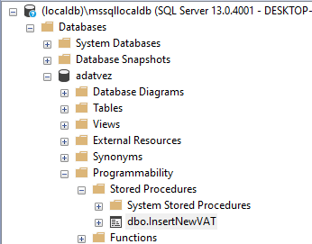

Microsoft SQL Server programozása¶
A Microsoft SQL Server platform nyelve a T-SQL. A T-SQL nyelv platform specifikus, azaz a nyelv csak MSSQL szerveren használható - bár más platformoknak is meg van a saját, hasonló nyelve. A T-SQL nyelv és az általa támogatott adatbázisszerver-oldali programozási eszközök az eredetileg deklaratív SQL nyelvet imperatív eszközökkel egészítik ki, mint változók használata, elágazások, eljárások, valamint kapunk további eszközöket, mint például a triggerek és kurzorok.
Szerveroldali programozás¶
Szerveroldali programozás
Szerveroldali-, avagy adatbázisszerver-oldali programozás alatt azt értjük, amikor az adatbázisban nem csupán adatot lekérdező és módosító parancsokat hajtunk végre, hanem üzleti logikai feladatokat is itt valósítunk meg.
Ahhoz, hogy megértsük, mikor érdemes szerveroldali programozási eszközöket használni, először azt érdemes megérteni, miért merülhet egyáltalán fel bennünk annak a lehetősége, hogy üzleti logikát az adatbázisban írjunk meg.
Miért akarhatunk az adatbázisban üzleti logikai feladatokat megvalósítani?
A rétegzett architektúrában egy alsóbb réteg szolgáltatást nyújt a felette elhelyezkedő réteg számára. A felsőbb réteg tehát "nem tudja kikerülni" az alatta levő réteget, azon keresztül kell a feladatát elvégeznie. De ha belegondolunk, C#/Java/C++/stb. kódbázisban nem feltétlenül tudunk hasonlót garantálni. Tehát, ha egy komplex szabályrendszert és logikát megvalósítunk például egy C# osztályban, akkor nehéz azt kétséget kizáróan garantálni, hogy ezen osztályt nem lehet "megkerülni".
Ha azonban a logika az adatbázisban van, a logika nem, vagy sokkal kevésbé megkerülhető. Ez abból is fog fakadni, hogy a szerveroldali programozás olyan eszközöket ad a kezünkbe (lásd majd a triggereket), amelyek garantálják, hogy a logikánk minden esetben végrehajtásra kerül.
A szerveroldali programozásnak előnyei és hátrányai vannak. Amikor azt vizsgáljuk, egy funkciót hol célszerű megvalósítani, a rétegzett architektúra mellett azt is néznünk kell, a technológia mire ad lehetőséget, illetve a lehetséges alternatívák közül melyik jár a legtöbb előnnyel.
Ha üzleti logikai funkciót az adatbázisban valósítunk meg, az alábbi előnyökkel találkozhatunk.
-
Az adatbázis konzisztenciáért való felelőssége még egyértelműbbé válik. A relációs modell nagy hangsúlyt fektet a konzisztenciára, de nem minden üzleti logikai konzisztencia feltétel írható le közvetlenül a relációs modellben. Gondoljunk csak arra a példára, hogy a Neptun rendszerben a kurzusoknak van egy létszámlimitje. Ez egy üzleti logikai szabály, amelyet, ha megszegünk, akkor az adatunk inkonzisztens üzleti értelemben. Amennyiben ezen szabály betartása is az adatbázisrendszer feladata, garantálható, hogy mindig konzisztens lesz az adat.
-
Csökkenthető az adatbázisból kifelé irányuló adatforgalom. Sokszor adatot azért kérdezünk le, hogy megjelenítsük a felhasználó számára. Nem ezen tudunk csökkenteni. De olyan esetekben, amikor csak azért kérdezünk le adatot, hogy az alapján az üzleti logika döntést hozhasson, kihagyható az adat utaztatása az adatbázis és az üzleti logika között, amennyiben a logikát visszük az adatbázisba. Ez egyben biztonságosabb is, mert nem kerül feleslegesen a hálózatra adat (ahol esetleg lehallgatható, avagy rosszul konfigurált alkalmazás miatt naplófájlokba, hibaüzenetekbe kerülhet érzékeny adat).
-
Az adatbázis szerverben megírt logika felfogható egy interfészként is, amely interfész az adat hozzáférés és módosítás részleteit elrejti a felhasználó (itt: adatelérési réteg avagy üzleti logikai réteg) elől. Ez egyrészt absztrakciót ad a kezünkbe, másrészt segítheti a párhuzamos, gyorsabb fejlesztést. Tehát, amíg egy fejlesztői csapat az adatbázisban készíti a logikát, egy másik csapat a ráépülő alkalmazást készítheti, mert az interfész, azaz, hogy az adatbázis mit és hogyan tesz elérhetővé, már korábban definiálható (az implementáció nélkül). A hibajavítás is könnyebb ilyen esetben, amennyiben a hiba az adatbázisban megírt logikában van. Ilyenkor elég egy helyen, az adatbázisban javítani a kódot, és minden ráépülő rendszer rögtön jól fog működni (ellenben azzal, ha a hibát mondjuk Java kódban kell javítani, mert akkor a Java kódbázisra épülő alkalmazásokból új verziót kell kiadni, és azt telepíteni is kell minden felhasználónál).
Természetesen a szerveroldali programozásnak hátrányai is vannak.
-
A nyelv, amit használunk platformfüggő. A megoldások nem vihetőek át egy adatbázisrendszerből másikba. Sőt, a programozói tudás se vihető át könnyen. Egy C++ programozó könnyebben tud C#-ban kódolni, mint ha nem lenne ilyen ismerete. De ez nem igaz a szerveroldali eszköztárra. Egyik platform nem ugyanazt támogatja, mint a másik. A nyelvek szintaktikája is jelentősen eltér. Az adatbázisszerver-oldali programozás egészen más eszköztárat és megközelítést, specifikus tudást igényel.
-
Az adatbázis terhelése nő. Nyilvánvaló, hogy ha több feladatot lát el egy szerver, akkor több erőforrást fog igényelni. Az adatbázisok egyébként is kritikus pontjai az adatvezérelt rendszereknek, főként, hogy a klasszikus relációs adatbázisok nem jól támogatják a horizontális skálázást (a terhelés megosztását több szerver között). Ha még több feladatot, még több felelősséget kap egy adatbázis szerver, hamar lassúvá válhat.
-
A technológia ma már nem fejlődik tovább. Nevezhetjük akár kifutó technológiának is, amelyet leginkább az un. legacy, már régóta fejlesztett alkalmazásokban használnak leginkább. Új technológiai eszköztárat használó szoftverfejlesztési projektekben ritkábban jelenik meg ezen szerveroldali világ.
A T-SQL nyelv alapjai¶
A T-SQL nyelv tehát a Microsoft SQL Server nyelve, amely a standard SQL utasításokon felül lehetőséget ad:
- változók használatára,
- elágazások és ciklusok kezelésére,
- tárolt eljárások ("metódusok") írására,
- kurzorok (iterátorok) használatára,
- triggerek (eseménykezelő eljárások) definiálására,
- és még sok minden másra is.
Nézzük a nyelv szintaktikáját példákon keresztül. A pontos szintaktikát lásd a hivatalos dokumentációban.
Az alábbi példák a minta adatbázison futtathatóak.
Változók¶
A változókat használat előtt deklarálni kell. Konvenció szerint a változók neve @ karakterrel kezdődik. Értékadás nélkül az inicializálatlan változó NULL értékű.
DECLARE @num int
SELECT @num
-- NULL
Értékadás a SET utasítással lehetséges, avagy közvetlenül a deklarációban:
DECLARE @num int = 5
SELECT @num
-- 5
SET @num = 3
SELECT @num
-- 3
A változó scope-ja nem kötődik az utasítás blokkhoz (BEGIN-END között). A változó az un. batch-en belül vagy tárolt eljáráson belül érvényes:
BEGIN
DECLARE @num int
SET @num = 3
END
SELECT @num
-- Ez működik, a változó az utasítás blokkon kívül is elérhető.
-- 3
GO -- új batch-et kezd
SELECT @num
-- Hiba: Must declare the scalar variable "@num".
Változónak lekérdezéssel is adhatunk értéket:
DECLARE @name nvarchar(max)
SELECT @name = Name
FROM Customer
WHERE ID = 1
Ha a lekérdezés több sorral tér vissza, az utolsó érték marad a változóban:
DECLARE @name nvarchar(max)
SELECT @name = Name
FROM Customer
-- több illeszkedő sor is lesz
-- SELECT utolsó eredménye kerül végül a változóba
Ha a lekérdezés nem tér vissza eredménnyel, a változó értéke nem változik:
DECLARE @name nvarchar(max)
SET @name = 'aaa'
SELECT @name = Name
FROM Customer
WHERE ID = 99999999
-- nincs illeszkedő sor
SELECT @name
-- aaa
Utasítás blokkok és vezérlési szerkezetek¶
Utasítás blokkot a BEGIN-END utasítás pár közé írhatunk:
BEGIN
DECLARE @num int
SET @num = 3
END
Elágazást IF-ELSE szerkezettel készíthetünk:
DECLARE @name nvarchar(max)
SELECT @name = Name
FROM Customer
WHERE ID = 123
IF @name IS NOT NULL -- Ha létezik a felhasználó
BEGIN
PRINT 'Updating email'
UPDATE Customer
SET Email = 'agh*******@gmail.com'
WHERE ID = 123
END
ELSE
BEGIN
PRINT 'No such customer'
END
Ciklushoz a WHILE feltételt és egy BEGIN-END utasításblokkot használunk:
-- Generáljunk legalább 1000 terméket (pl. teszteléshez)
WHILE (SELECT COUNT(*) FROM Product) < 1000
BEGIN
INSERT INTO Product(Name,Price,Stock,VATID,CategoryID)
VALUES ('Abc', 1, 1, 3, 13)
END
Beépített függvények¶
A T-SQL nyelvben számtalan beépített függvény érhető el. Alább pár példa a függvényekre és használatukra.
Az alábbi példákban a függvények eredményét select-tel lekérdezzük. Ez csupán azt a célt szolgálja, hogy láthassuk az eredményt. Függvény bárhol használható a nyelvben, ahol skalár érték használható.
String kezelő függvények:
-- Összefűzés
SELECT CONCAT ('Happy ', 'Birthday!')
-- Happy Birthday!
-- Bal oldalról N darab karakter
SELECT LEFT('ABCDEF',2)
-- AB
-- Szöveg hossza
SELECT LEN('ABCDEF')
-- 6
-- Részstring csere
SELECT REPLACE('Happy Birthday!', 'day', 'month')
-- Happy Birthmonth!
-- Kisbetűsre alakítás
SELECT LOWER('ABCDEF')
-- abcdef
Dátumok kezelése:
-- Aktuális dátum és idő
SELECT GETDATE()
-- 2021-09-28 10:43:59.120
-- Dátum év komponense
SELECT YEAR(GETDATE())
-- 2021
-- Dátum meghatározott komponense
SELECT DATEPART (day,'12/20/2021')
SELECT DATEPART (month,'12/20/2021')
-- 20
-- 12
-- Dátumok közötti különbség adott mértékegységben (itt: nap) mérve
SELECT DATEDIFF(day, '2021-09-28 12:10:09', '2021-11-04 13:45:09')
-- 37
Adattípus konvertálás:
SELECT CAST('12' as int)
-- 12
SELECT CONVERT(int, '12')
-- 12
SELECT CONVERT(int, 'aa')
-- Hiba: Conversion failed when converting the varchar value 'aa' to data type int.
SELECT TRY_CONVERT(int, 'aa')
-- NULL
ISNULL: eredménye az első argumentum, ha az nem null, különben a második argumentum (ami lehet null is).
DECLARE @a int
DECLARE @b int = 5
SELECT ISNULL(@a, @b)
-- 5
Nem keveredendő össze az is null feltétellel, pl.: UPDATE Product SET Price=111 WHERE Price is null
Kurzor¶
A kurzor egy iterátor, amellyel egy rekord halmazon tudunk elemenként végiglépni. Akkor használjuk, amikor egy lekérdezés több elemmel tér vissza, és az elemekkel egyesével szeretnénk további feldolgozást végezni.
A kurzor használata több lépésből áll:
- A kurzort deklarálni kell, majd meg kell nyitni.
- Az iteráció egy ciklussal történik.
- A kurzort bezárjuk és felszabadítjuk.
Deklaráció és megnyitás¶
A deklaráció a DECLARE utasítással történik. Itt adjuk meg a lekérdezést is, amely az eredményeket szolgáltatja. A teljes szintaktika:
DECLARE kurzornév CURSOR
[ FORWARD_ONLY | SCROLL ]
[ STATIC | KEYSET | DYNAMIC | FAST_FORWARD ]
[ READ_ONLY | SCROLL_LOCKS | OPTIMISTIC ]
FOR lekérdezés
[ FOR UPDATE [ OF oszlopnév [ ,...n ] ] ]
A deklarációban opcionális megadható elemek jelentése (részletesebben lásd a dokumentációban):
FORWARD_ONLY: csakFETCH NEXTlehetségesSCROLL: szabadon lehet előre és visszafelé is lépni a kurzorbanSTATIC: másolatból dolgozik, az eredmények a megnyitás (OPEN) időpillanatában látható tartalmat mutatjaKEYSET: megnyitáskori állapot adja a sorokat és sorrendjüket, de a rekord tartalma aFETCHpillanatában kerül lekérdezésreDYNAMIC: minden léptetéskor aktuális állapotot adja, tehát konkurens tranzakciók módosításait is láthatjukREAD_ONLY: nem update-elhető a kurzor által léptetett tartalomSCROLL_LOCKS: léptetés zárolja a sorokat (alapból nem), ezáltal garantálva, hogy aFETCHutáni módosítás bizonyosan sikeres leszOPTIMISTIC: nem zárol, optimista konkurenciakezelést alkalmaz (aFETCHideje és azt követőUPDATEközött nem történt-e módosítás)FOR UPDATE: updatelehető oszlopok listája
A deklaráció még nem elég a használathoz, a kurzort meg kell nyitni az OPEN paranccsal. Az OPEN párja a kurzor használatának befejezésére a CLOSE. Bezárás után a kurzor újra megnyitható, így külön jelezni kell, amikor többet már nem használjuk a kurzort a DEALLOCATE paranccsal. (Tipikusan a CLOSE és DEALLOCATE egymást követi, mert csak egyszer használjuk a kurzort.)
Léptetés¶
A kurzor aktuális eleméhez úgy férünk hozzá, hogy a FETCH utasítással "kimásoljuk" lokális változó(k)ba az értékeket. Az erre használt változókat előre deklarálni kell. A FETCH utasítás tipikusan a következő elemet veszi (FETCH NEXT), de ha nem FORWARD_ONLY a kurzor, akkor léphetünk előre és hátra egyet és többet is:
FETCH
[ NEXT | PRIOR | FIRST | LAST
| ABSOLUTE { n | @nvar }
| RELATIVE { n | @nvar }
]
FROM cursor_name
INTO @variable_name [ ,...n ]
Azt, hogy a FETCH utasítás sikeres volt-e, a @@FETCH_STATUS implicit változót lekérdezve tudjuk meg. A @@FETCH_STATUS változó értéke:
- 0 sikeres FETCH esetén,
- -1 sikertelen FETCH esetén,
- -2 amennyiben a lekért sor hiányzik (
KEYSEThasználatakor lehetséges).
A teljes iteráció így két FETCH utasítást és egy WHILE ciklust igényel:
-- declare, open ...
FETCH NEXT FROM cur INTO @var1, @var2
WHILE @@FETCH_STATUS = 0
BEGIN
-- .. saját logika
FETCH NEXT FROM cur INTO @var1, @var2
END
Vegyük észre, hogy a kódban kétszer szerepel a FETCH utasítás. Ennek oka, hogy az első, cikluson kívüli a legelső rekord lekérdezéséhez használatos, míg a második, a ciklus belsejében minden további rekordot kér le egyesével.
Példa¶
Lássunk egy komplett példát. Keressük meg azon termékeket, amiből alig van raktáron, és ha a legutolsó eladás több, mint egy éve volt, akkor adjunk kedvezményt a termékre:
-- Ezekbe a változókba szedjük ki a kurzorból az adatokat
DECLARE @ProductName nvarchar(max)
DECLARE @ProductID int
DECLARE @LastOrder datetime
DECLARE products_cur CURSOR SCROLL SCROLL_LOCKS -- Zárolás hogy a módosítás garantáltan sikerüljön
FOR
SELECT Id, Name FROM Product WHERE Stock < 3 -- Kurzor lekérdezése
FOR UPDATE OF Price -- Szeretnénk frissíteni is a rekordokat
-- Tipikus megnyitás, fetch, ciklus
OPEN products_cur
FETCH FROM products_cur INTO @ProductID, @ProductName
WHILE @@FETCH_STATUS = 0
BEGIN
-- A ciklusban akármilyen műveletet végezhetünk
-- Itt megkeressük az utolsó vásárlás idejét
SELECT @LastOrder = MAX([Order].Date)
FROM [Order] JOIN OrderItem ON [Order].Id = OrderItem.OrderId
WHERE OrderItem.ProductID = @ProductId
-- Diagnosztikai kiírás
PRINT CONCAT('ProductID: ', convert(nvarchar, @ProductID), ' Last order: ', ISNULL(convert(nvarchar, @LastOrder), 'No last order'))
IF @LastOrder IS NULL OR @LastOrder < DATEADD(year, -1, GETDATE())
BEGIN
UPDATE Product
SET Price = Price * 0.75
WHERE CURRENT OF products_cur
-- Aktuális kurzor rekord frissítése
-- Alternatíva: WHERE Id = @ProductID
END
-- Következő rekord lekérdezése, majd ugrás a WHILE ciklushoz ellenőrizve, hogy sikeres volt-e
FETCH FROM products_cur INTO @ProductID, @ProductName
END
-- Kurzor használatának befejezése
CLOSE products_cur
DEALLOCATE products_cur
Tárolt eljárás és függvény¶
A korábbi példákban megírt kódokat a megírásuk után beküldtük a szervernek, amely azonnal végrehajtotta őket. Lehetőségünk van olyan kódot is írni, amelyet a szerver eltárol és később bármikor meghívhatjuk. Egy moduláris programozási környezetben függvényeknek, objektumorientált világban pedig metódusoknak szoktuk ezt hívni. Microsoft SQL Server esetében ezeket tárolt eljárásnak és tárolt függvénynek hívjuk. A névben a tárolt arra utal, hogy az eljárás kódját az adatbázis eltárolja, így az adat mellett része lesz az adatbázisnak (és például a biztonsági mentésbe is bekerül).
Az eljárás és a függvény között annyi a különbség, hogy az eljárásoknak tipikusan nincs visszatérési értéke, míg a függvényeknek van. További megkötés MSSQL platformon, hogy a függvények csak olvashatják az adatbázist, de módosítást nem végezhetnek.
Eljárás¶
Egy tárolt eljárást az alábbi szintaktikával hozhatunk létre:
CREATE [OR ALTER] PROC[EDURE] eljárás_név
[ { @paraméter adattípus } ] [ ,...n ]
AS
[BEGIN]
sql_utasítások [ ...n ]
[END]
A CREATE OR ALTER eredménye a tárolt eljárás létrehozása, ha nem létezett, avagy ha már létezett ilyen névvel, akkor annak frissítése az új tartalommal. MSSQL Server 2016 előtt nem volt CREATE OR ALTER, csak CREATE PROC és ALTER PROC. Egy tárolt eljárást a DROP PROCECURE utasítással lehet törölni, melynek hatására az eljárás eltávolításra kerül a szerverből és többet nem hívható meg.
Lássuk például az ÁFA kulcs rögzítését a VAT táblába annak garantálásával, hogy olyan kulcs nem rögzíthető mely már létezik:
create or alter procedure InsertNewVAT -- tárolt eljárás létrehozása, neve
@Percentage int -- tárolt eljárás paraméterei
as
begin
-- innen kezdődik a kód, amit az eljárás meghívásakor végehajt a rendszer
begin tran -- nem megismételhető olvasás elkerülése végett
set transaction isolation level repeatable read
declare @Count int
select @Count = count(*)
from VAT
where Percentage = @Percentage
if @Count = 0
insert into VAT values (@Percentage)
else
print 'error';
commit
end
Tárolt eljárás az előbbi parancs hatására létrejön, és utána az alábbi módon hívhatjuk meg:
exec InsertNewVAT 27
A tárolt eljárások az adatbázisunk részei. Microsoft SQL Server Management Studio-ban például a képen látható helyen jelennek meg:

Skalár függvény¶
Függvény deklarációja az eljáráséhoz hasonlóan történik, azonban meg kell adni a visszatérési típust is:
CREATE [ OR ALTER ] FUNCTION név
( [ { @paraméter adattípus } ] [ ,...n ] )
RETURNS adattípus
[ AS ]
BEGIN
utasítások
RETURN skalár_érték
END
Nézzük egy int visszatérési értékű függvényt amelynek nincs bemenő paramétere:
CREATE OR ALTER FUNCTION LargestVATPercentage()
RETURNS int
BEGIN
RETURN (SELECT MAX(Percentage) FROM VAT)
END
Ezt a függvényt így használhatjuk:
select dbo.LargestVATPercentage()
-- A dbo előtag a séma azonosítása, amivel azt jelöljük, hogy ez nem egy beépített függvény
-- Enélkül a függvényt nem találja meg a rendszer
-- avagy például
DECLARE @maxvat int = dbo.LargestVATPercentage()
select @maxvat
Tábla függvény¶
Nem csak skalár értékkel térhet vissza egy függvény, az eredmény lehet tábla típusú is. Ilyenkor a deklaráció így néz ki:
CREATE [ OR ALTER ] FUNCTION név
( [ { @paraméter adattípus } ] [ ,...n ] )
RETURNS TABLE
[ AS ]
RETURN select utasítás
Nézzük például az áfakulcsok lekérését egy adott százalék felett:
CREATE FUNCTION VATPercentages(@min int)
RETURNS TABLE
AS RETURN
(
SELECT ID, Percentage FROM VAT
WHERE Percentage > @min
)
Ezen függvény táblát ad vissza, tehát bárhol használhatjuk a függvényt, ahol tábla állhat, például:
SELECT * FROM VATPercentages(20)
Mivel a függvény táblát ad vissza, akár join-olhatunk is rá:
SELECT VAT.Percentage, count(*)
FROM VAT JOIN VATPercentages(20) p on VAT.ID = p.Id
GROUP BY VAT.Percentage
Hibakezelés¶
A tárolt eljárást ismertető példában meg akartuk akadályozni a duplikált rekord beszúrását egy táblába. Ezt fentebb úgy értük el, hogy nem hajtottuk végre az utasítást. Azonban célszerűbb lenne jelezni a hibát a hívó számára. Erre szolgál a strukturált hibajelzés és kezelés. Hiba esetén a throw paranccsal dobhatunk hibát. Ezen parancs hatására a kód végrehajtása megszakad és a hívóhoz visszakerül a végrehajtás (ahol a hiba lekezelhető, avagy továbbdobható). A hibának van egy hibaszáma (50000 és 2147483647 között), egy szövege, és egy 0-255 közötti hiba állapot azonosító.
Ezzel a kiegészítve az ÁFA kulcs rögzítése az ÁFA táblába tárolt eljárásunk így néz ki:
create or alter procedure InsertNewVAT
@Percentage int
as
begin
begin tran
set transaction isolation level repeatable read
declare @Count int
select @Count = count(*)
from VAT
where Percentage = @Percentage
if @Count = 0
insert into VAT values (@Percentage)
else
throw 51000, 'error', 1;
commit
end
Hiba lekezelése (elkapására) az alábbi szintaktikát használhatjuk:
begin try
exec InsertNewVAT 27
end try
begin catch
-- az alábbi függvényekkel hozzáférünk a hiba részleteihez (hasonlóan, mint a stack trace más nyelvekben)
SELECT
ERROR_NUMBER() AS ErrorNumber,
ERROR_SEVERITY() AS ErrorSeverity,
ERROR_STATE() AS ErrorState,
ERROR_PROCEDURE() AS ErrorProcedure,
ERROR_LINE() AS ErrorLine,
ERROR_MESSAGE() AS ErrorMessage;
end catch
Hibát természetesen nem csak mi dobhatunk. A rendszer is analóg módon jelez hibákat, amelyeket ugyanezen eszközökkel kezelhetünk.
Trigger¶
Az eddig ismertetett eszközök és nyelvi elemek hasonlók más platformokon elérhető lehetőségekhez. A triggerek azonban speciális eszközök, amelyekhez hasonlót máshol nem igen találunk. A triggerek eseménykezelő tárolt eljárások. Használatukkal az adatbázisban történő különböző eseményekre tudunk feliratkozni és az esemény bekövetkeztekor a rendszer a triggerben megadott kódunkat lefuttatja.
Az alábbiakban kifejezetten DML triggerekkel foglalkozunk. Ezek az adatmódosítás (insert, update, delete) műveletek hatására lefutó triggerek. Léteznek más triggerek is, akár rendszereseményekre is lehet triggert készíteni, ezekkel kapcsolatban lásd a hivatalos dokumentációt.
DML trigger¶
Triggerek használatával több olyan feladatot is meg tudunk oldani, amely nélkülük nehéz lenne. Gondoljunk például egy audit naplózási feladatra: amikor egy adott táblában valamilyen módosítás történik, arról rögzítsünk egy rekordot egy napló táblába. Ezt a feladatot C#/Java/Python kódban is meg tudnánk oldani, csakhogy az érintett tábla tartalommódosítását így becsomagoló osztály vagy kódrészlet megkerülhető - semmi nem akadályozza meg a programozót abban, hogy "kikerülje" az így megírt logikát és az adatbázist direktben érje el. Ezt megakadályozni triggerekkel se tudjuk, azonban készíthetünk egy triggert, amely C#/Java/Python kód helyett elvégzi a szükséges naplózást.
Nézzük is ennek a példának a kódját. Naplózzuk tehát bármely termékek törlését egy napló táblába:
-- Napló tábla létrehozása
create table AuditLog([Description] [nvarchar](max) NULL)
go
-- Naplózó trigger
create or alter trigger ProductDeleteLog
on Product
for delete
as
insert into AuditLog(Description)
select 'Product deleted: ' + convert(nvarchar, d.Name) from deleted d
A fenti parancsok lefuttatásának hatására létrejön a trigger az adatbázisban (mint ahogy egy tárolt eljárás is létrejön), és a rendszer ezt a triggert minden érintett eseménynél lefuttatja. Tehát a triggert nem mi futtatjuk, hanem a rendszer. Ennek ellenére adunk nevet a triggernek, hogy hivatkozhassunk rá (pl., ha törölni akarjuk a DROP TRIGGER utasítással). A trigger az érintett táblához kötve látható az adatbázisban:

Egy DML trigger definiálásának szintaktikája az alábbi:
CREATE TRIGGER trigger_név
ON { tábla | nézet }
FOR { [ DELETE ] [ , ] [ INSERT ] [ , ] [ UPDATE ] }
AS
sql_utasítás [ ...n ]
Lássuk, hogy a trigger definiálásakor megadjuk a táblát avagy nézetet, amelyre a triggert definiáljuk. Egy trigger tehát egyetlen tábla eseményeire figyel. Azt, hogy milyen esemény, azt pedig úgy adjuk meg, hogy felsoroljuk a módosító eseményeket (pl. for update, insert). Vegyük észre, hogy a három lehetőség minden féle módosítást lefed, és hogy select jellegű esemény nincs - hiszen az nem módosítás.
A trigger kódjában definiált utasításokat a rendszer az érintett tábla specifikált eseményei után hajtja végre. Ez azt jelenti, hogy a módosításokat a rendszer elvégezte (például beszúrás esetén már szerepelnek az új sorok a táblában), azonban még a tranzakciót nem zárta le. Így tehát lehetőségünk van további módosításokat végezni a tranzakció részeként (és így egyben, atominak látva az "eredeti" utasítás és a trigger eredményét is), vagy akár megszakítani a tranzakciót. A triggerek egy speciális használati esete a (máshogy nem leírható) konzisztencia ellenőrzése és hiba esetén a módosítás megszakítása. Hamarosan látunk erre is példát.
A triggerek utasítás szintűek, ami azt jelenti, hogy DML utasításonként egyszer hívódnak meg. A trigger nem egyetlen rekord változását kezeli le, hanem egyetlen utasítás összes módosítását. Tehát ha például egy update utasítás 15 sort módosít, akkor a trigger egyetlen alkalommal kerül meghívásra és abban az egyetlen alkalomban mind a 15 módosítást egyszerre látja. Ez természetesen igaz a beszúrásra és törlésre is - egy törlés művelet törölhet egyszerre több sort, és beszúrni is lehet egyetlen utasítással több rekordot.
Nincs sor szintű trigger
Más adatbázis platformon létezik sor szintű trigger, ahol is a módosított sorokra egyenként hívódik meg a trigger. Microsoft SQL Server platformon ilyen nem létezik!
Honnan tudjuk meg a triggerben milyen módosítás történt? A trigger kódjában hozzáférünk két napló táblához az inserted és deleted implicit változókon keresztül. Ezen táblák szerkezete megegyezik annak a táblának a szerkezetével, amelyre a triggert definiáltuk. A táblák csak a trigger lefutása alatt léteznek és csak a triggerből érhetőek el. A tartalmuk attól függ, hogy milyen jellegű utasítás indította a triggert:
| insert | delete | update | |
|---|---|---|---|
| inserted | új rekordok | üres | rekordok új értékei |
| deleted | üres | törölt rekordok | rekordok régi értékei |
Beszúrás esetén tehát a beszúrt rekordok a táblában is megtalálhatóak (de ott nem "látjuk", hogy újonnan kerültek beszúrásra), és emellett az inserted táblában érhetőek el. Törlés esetén analóg módon a deleted táblában van a törlés előtti állapotuk, de a táblából már törölve vannak. Végezetül update esetén a módosítás előtti és utáni állapotokat látjuk a két naplótáblában. Ezen napló táblákkal tábla módjára kell dolgozni, tehát mindig arra kell számítanunk, hogy több rekord van bennük.
Az inserted és deleted táblák
Az inserted és deleted tábla, csak táblaként kezelhetjük! Tehát nem használhatjuk mondjuk így: select @id=inserted.ID, viszont használhatjuk kurzorban vagy join-ban is ezen táblákat.
Láttunk már egy példát triggerrel megvalósított audit naplózásra. Nézzük más jellegű felhasználást. Legyen adott egy tábla egy email cím oszloppal. Ellenőrizzük beszúrásnál és módosításnál az email cím értéket és ne engedjünk biztosan nem email címnek kinéző szöveget beszúrni. Itt tehát máshogy nem leírható konzisztencia szabályt tartunk be a triggerrel.
-- Az email cím ellenőrzéshez készítsünk egy függvényt
CREATE FUNCTION [IsEmailValid](@email nvarchar(1000))
RETURNS bit -- true/false visszatérési érték
AS
BEGIN
IF @email is null RETURN 0 -- Nem lehet null
IF @email = '' RETURN 0 -- Nem lehet üres string
IF @email LIKE '%_@%_._%' RETURN 1 -- Kb. email kinézete van
RETURN 0
-- Ugyanez rövidebben a CASE szerkezettel:
-- RETURN CASE WHEN ISNULL(@email, '') <> '' AND @email LIKE '%_@%_._%' THEN 1 ELSE 0 END
END
-- Definiáljuk a triggert
create or alter trigger CustomerEmailSyntaxCheck
on Customer
for insert, update -- beszúrás és módosítás is érdekel
as
-- Mind a beszúrás mind módosítás esetén az inserted táblában lesz az új adat
-- Létezik-e olyan elem ott, amire az új email cím nem érvényes
if exists(select 1 from inserted i where dbo.IsEmailValid(i.Email)=0)
throw 51234, 'invalid email address', 1 -- szakítsuk meg a tranzakciót a hiba eldobásával
A fenti trigger ugyan a beszúrás avagy módosítás után fut, de még ugyanabban a tranzakcióban. Tehát ha hibát dobunk, akkor a tranzakció meg fog szakadni (hacsak nem kezeli le a hívó). Azzal, hogy a trigger utasítás szinten fut, egyetlen hibás sor is az egész utasítást szakítja meg - természetesen ezt várjuk az atomiság miatt: az utasítás egészére, azaz több sor beszúrására/módosítására egyszerre teljesül az oszthatatlanság.
Triggerek további gyakori felhasználási esete a denormalizált adat karbantartása. Ugyan egy relációs adatbázisban igyekszünk elkerülni a denormalizálást, a gyakorlatban teljesítmény okokból lehet mégis szükség számított adat külön eltárolására. Nézzünk egy példát erre is. Tegyük fel, hogy a vevőknek két email címe is van: egy a bejelentkezéshez, és megadhatnak egy másikat, amit az értesítésekhez használni akarnak. Hogy ne kelljen mindig mindkét email címet minden alkalommal lekérdezni, és választani a kettő közül, legyen elérhető adatbázisban a valóban használt email cím, amely az előző kettőből "számítható":
-- Plusz email cím oszlopok a vevőknek
alter table Customer
add [NotificationEmail] nvarchar(max), [EffectiveEmail] nvarchar(max)
go
-- Használt email címet frissítő trigger
create or alter trigger CustomerEmailUpdate
on Customer
for insert, update
as
update Customer -- A Customer táblát módosítjuk, nem az inserted-et
set EffectiveEmail = ISNULL(i.NotificationEmail, i.Email) -- Egyik vagy másik értéket másolja az EffectiveEmail oszlopba
from Customer c join inserted i on c.ID = i.ID -- Az inserted-ek alapján kell a Customer-ben kikeresni a rekordokat
Trigger rekurzió
Vegyük észre az előbbi triggerben, hogy a módosítás reagálásaként egy újabb módosítást hajtunk végre. Ez tehát rekurzió. A DML triggerek rekurziója alapesetben ki van kapcsolva, így a fenti példa nem vált ki rekurziót. Amennyiben viszont engedélyezett az adatbázisban a trigger rekurzió, azt kezelnünk is kell.
Nézzünk egy másik denormalizált adat karbantartás példát. A megrendelés táblába vegyünk fel egy végösszeg oszlopot, amely a megrendelés teljes nettó ára, és ezt automatikusan tartsuk karban:
create or alter trigger OrderTotalUpdateTrigger
on OrderItem
for insert, update, delete
as
update Order
set Total = isnull(Total,0) + TotalChange
from Order inner join
(select i.OrderID, sum(Amount*Price) as TotalChange
from inserted i
group by i.OrderID) OrderChange
on Order.ID = OrderChange.OrderID
update Order
set Total = isnull(Total,0) – TotalChange
from Order inner join
(select d.OrderID, sum(Amount*Price) as TotalChange
from deleted d
group by d.OrderID) OrderChange
on Order.ID = OrderChange.OrderID
Ebben a triggerben érdemes észrevenni, hogy míg az esemény az OrderItem táblában történik, a frissítendő tartalom az Order táblában van. Ez abszolút működőképes, egy trigger az adatbázis bármely részét olvashatja és írhatja, és továbbra is minden módosítás ugyanabban a tranzakcióban fut. Továbbá érdemes megérteni, hogy a triggerben nem újraszámoljuk az összeget, hanem kijavítjuk azt a változásokkal. Ez természetesen komplexebbé teszi a trigger kódját, de így lesz hatékony.
Triggerek sorrendje
Egy eseményre több trigger is definiálható, melyek lefutási sorrendje nem specifikált. Az első és utolsó triggert megadhatjuk, de más tekintetben nem építhetünk a sorrendre - és alapvetően nem is javasolt úgy dolgozni a triggerekkel, hogy azok egymásra építsenek.
Instead of trigger¶
A triggerek egy speciális fajtája az un. instead of trigger. Ilyen triggert táblára és nézetre is definiálhatunk. Nézzük előbb a tábla esetét. Táblára definiált instead of trigger, ahogy a neve sugallja, a végrehajtandó utasítás (insert/update/delete) helyett fut le. Tehát ilyenkor beszúrás esetén az új sorok nem kerültek be a táblába, törlésnél nem kerültek törlésre, módosításnál nem kerültek módosításra. Helyette a triggerben tudjuk definiálni, hogyan kell a műveletet végrehajtani. Az így felüldefiniált működésben hivatkozhatunk a táblára magára és végrehajthatjuk a szükséges utasítást a táblán, amely ebben az esetben nem okoz rekurziót. Ezen triggerek értelmezhetőek valójában utasítás előtti triggerként, mivel a módosítások előtt végezhetünk ellenőrzéseket és szakíthatjuk meg a műveletet hiba esetén.
Tipikus felhasználási esete az instead of triggernek az ellenőrzési feladatokon túl például, ha egy törlést valójában nem akarunk végrehajtani. Ezt szokás soft delete-nek hívni, amikor törlés helyett csak töröltnek jelöljük a rekordokat:
-- Soft delete flag oszlop a táblába 0 (azaz false) alapértelmezett értékkel
alter table Product
add [IsDeleted] bit NOT NULL CONSTRAINT DF_Product_IsDeleted DEFAULT 0
go
-- Instead of trigger, azaz delete utasítás hatására a törlés nem hajtódik végre
-- helyette az alábbi kód fut le
create or alter trigger ProductSoftDelete
on Product
instead of delete
as
update Product
set IsDeleted=1
where ID in (select ID from deleted)
Az instead of triggerek másik tipikus felhasználási esete a nézetek. Egy nézet egy lekérdezés eredménye, tehát nem értelmezhető az a művelet, hogy új adatot szúrunk be a nézetbe. Viszont egy instead of triggerrel definiálhatjuk, mit kell a "nézetbe beszúrás" helyett végrehajtani. Nézzünk erre egy példát. A nézetben a termék és áfa táblákból kapcsoljuk össze az adatokat úgy, hogy ne a hivatkozott áfa rekord azonosítója, hanem az áfa százaléka jelenjen meg a nézetben. Ebbe a nézetbe úgy tudunk beszúrni, ha a mögötte levő termékeket tároló táblába szúrunk be:
-- Nézet definiálása
create view ProductWithVatPercentage
as
select p.Id, p.Name, p.Price, p.Stock, v.Percentage
from Product p join Vat v on p.VATID=v.Id
-- Instead of trigger a nézetre a beszúrás helyett
create or alter trigger ProductWithVatPercentageInsert
on ProductWithVatPercentage
instead of insert
as
-- A beszúrás a Product táblába kerül, minden inserted rekordnak egy új sora keletkezik
-- És közben kikeressük a százaléknek megfelelő áfa rekordot
-- A megoldás nem teljes, mert nem kezeli, ha nincs még ilyen áfa rekord
insert into Product(Name, Price, Stock, VATID, CategoryID)
select i.Name, i.Price, i.Stock, v.ID, 1
from inserted i join Vat v on v.Percentage = i.Percentage
-- A trigger kipróbálható a nézetbe való beszúrással
insert into ProductWithVatPercentage(Name, Price, Stock, Percentage)
values ('Red ball', 1234, 22, 27)